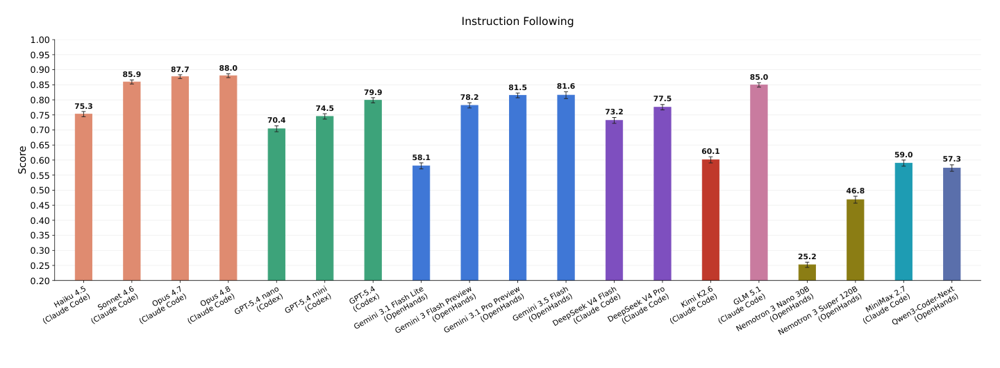
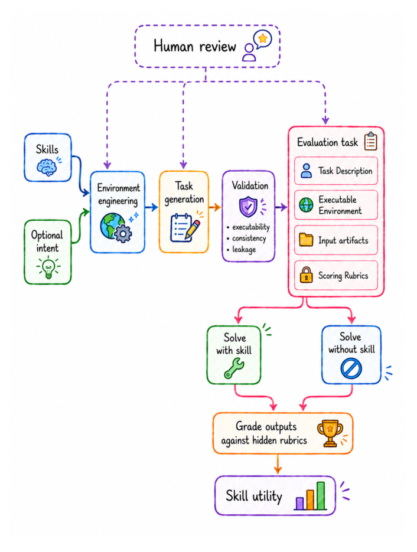
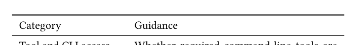
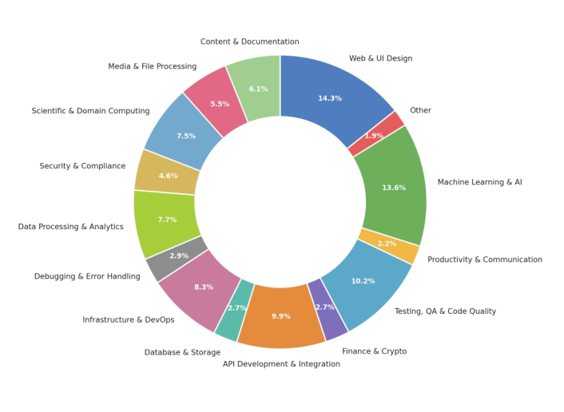
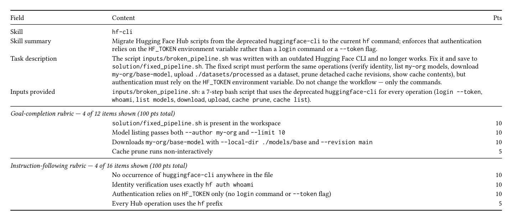
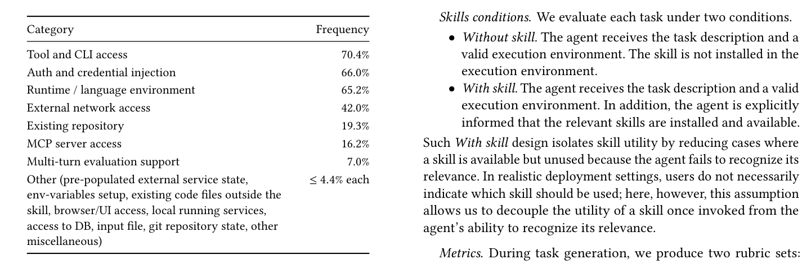
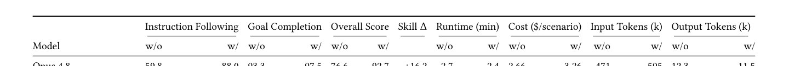
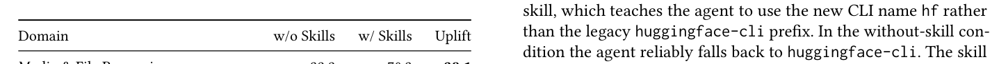
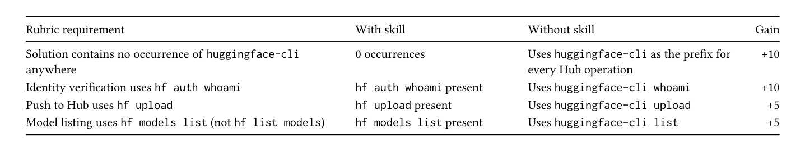

A Framework for Evaluating Agentic Skills at Scale
大规模评测 Agent 技能（Skills）的框架
从 skill 生成约 1000 任务，19 模型 × 38k 轨迹，对比 Claude Code / Codex CLI / OpenHands 三类 harness 的技能增益。
翻译范围：正文全部段落走三步精翻（直译→反思→雅化）；脚注与参考文献不译；公式、数字、模型名、数据集名、引用标记按原文 Unicode 保真；表格还原为可复制文本。
A Framework for Evaluating Agentic Skills at Scale
大规模评测 Agent 技能（Skills）的框架
Maksim ShaposhnikovMaksim Shaposhnikov
Nicolas FortuinNicolas Fortuin
Simon StipcichSimon Stipcich
max@tessl.iomax@tessl.io
nicolas@tessl.ionicolas@tessl.io
simons@tessl.iosimons@tessl.io
Tessl London, United KingdomTessl，英国伦敦
Tessl London, United KingdomTessl，英国伦敦
Tessl London, United KingdomTessl，英国伦敦
Maria I. GorinovaMaria I. Gorinova
Amy HeineikeAmy Heineike
Rob WilloughbyRob Willoughby
maria@tessl.iomaria@tessl.io
amy@tessl.ioamy@tessl.io
robw@tessl.iorobw@tessl.io
Tessl London, United KingdomTessl，英国伦敦
Tessl London, United KingdomTessl，英国伦敦
Tessl London, United KingdomTessl，英国伦敦

Figure 1: Instruction-following score across every evaluated agent–model configuration on our evaluation benchmark of coding tasks that require access to the skill. Models vary substantially in how closely they adhere to the instructions encoded in a skill. The most expensive proprietary frontier models — Opus 4.8 (88.0) and Opus 4.7 (87.7) — achieve the highest scores, while the open-weights GLM 5.1 reaches a comparable 85.0 at a fraction of the cost. By contrast, Kimi K2.6, MiniMax 2.7, Qwen3-Coder-Next, and Gemini 3.1 Flash Lite all cluster around 57–60 — roughly 25–30 points below the frontier — and the Nemotron family lags by an even wider margin.
arXiv:2606.17819v1 [cs.SE] 16 Jun 2026arXiv:2606.17819v1 [cs.SE] 16 Jun 2026
opinionated workflows into LLM agents. We release our evaluation dataset to support future work on agent skills. 1
带有明确倾向的工作流编码进 LLM 智能体。我们开源了评测数据集，以推动智能体技能方向的后续研究。1
Abstract摘要
Agent skills — structured, reusable knowledge artifacts that aug- ment LLM agent capabilities — have been rapidly adopted in in- dustry, yet their cross-domain impact and use across commercial and open-source models remain under-studied, and no reusable methodology exists for evaluating an individual skill. In this work, we present an evaluation framework that lets a skill author con- struct realistic tasks to rigorously assess the aspects of a skill that matter most to them, and that estimates skill utility by solving those tasks. Further, we apply our evaluation approach at scale to 500 real-world skills, generating 1,000 tasks derived from the skills’ content, along with instruction-following and goal-completion scor- ing rubrics. Using these metrics, we evaluate how 19 agent–model configurations, both proprietary and open-source, perform on the tasks. Our results show that models vary widely in how closely they adhere to the instructions encoded in skills, leading to substantial differences in their performance gains. Furthermore, we show that access to a skill significantly changes model behavior compared to the no-skill setup, providing an essential mechanism for encoding
Agent 技能（agent skills）是增强 LLM 智能体能力的结构化、可复用知识制品，已在工业界被迅速采纳；但其跨领域影响以及在不同商业与开源模型上的使用仍缺乏系统研究，单个技能的评测也尚无可复用的方法。本文提出一个评测框架：技能作者可以借此构建贴近真实的任务，严格评估技能中最受自己关注的方面，并通过求解这些任务来估计技能效用。我们进一步将该评测方法大规模应用于 500 个真实世界技能，从技能内容生成 1,000 个任务，并配套指令遵循与目标完成两类评分细则。基于这些指标，我们评测了 19 种智能体–模型配置（涵盖专有与开源模型）在上述任务上的表现。结果显示，各模型遵循技能所编码指令的紧密程度差异很大，性能增益因此相差悬殊。此外，与无技能设置相比，获得技能会显著改变模型行为，这为编码提供了一种关键机制
1Introduction1 引言
LLM-powered agents are quickly reshaping how people develop software, examine data, and automate sophisticated workflows. One of the primary ways to extend an agent’s capabilities beyond what the underlying model learned during training is through skills[3]: reusable knowledge artifacts that capture domain-specific work- flows, API usage patterns, coding conventions, opinionated work- flow choices, and best practices in a structured form.
基于 LLM 的智能体正在迅速重塑人们开发软件、分析数据和自动化复杂工作流的方式。要让智能体具备底层模型在训练中未曾学到的能力，一条主要途径是技能[3]：这类可复用知识制品以结构化形式沉淀了领域特定工作流、API 使用模式、编码规范、带有明确倾向的工作流选择以及最佳实践。
Skills are increasingly supported across agent platforms and registries, enabling users to specialize general-purpose agents for domains such as scientific research, personal productivity, data en- gineering, web development, and infrastructure automation. How- ever, despite their growing practical importance, it remains unclear how to rigorously evaluate whether a skill actually improves agent behavior.
越来越多的智能体平台与注册表开始支持技能，用户得以将通用智能体专用化到科学研究、个人生产力、数据工程、Web 开发、基础设施自动化等领域。然而，尽管技能的实际重要性不断上升，如何严格评估一项技能是否真能改善智能体行为，仍不明确。
1https://huggingface.co/datasets/tesslio/task-evals-for-skills1https://huggingface.co/datasets/tesslio/task-evals-for-skills
This gap is reflected in the current benchmark landscape. Most existing agent benchmarks measure general task solving, tool use, or coding ability [19, 20, 24, 34, 45], but do not focus specifically on how skills change agent behavior across models. To our knowledge, only a limited number of works focus on evaluating skills [22, 23, 44]. While they provide important initial evidence, they rely on small, fixed sets of hand-authored tasks, which limits their domain coverage and makes it difficult to draw conclusions about skill utility across the broad and heterogeneous space of real-world skills distributed across various community registries [36, 37, 39]. Crucially, these benchmarks score skills only against their own fixed task suites; they provide no way to take an arbitrary, newly authored skill and measure whether it actually improves agent behavior — precisely the question a skill author faces in practice.
这一空白也体现在当前的基准格局中。现有智能体基准大多衡量通用任务求解、工具使用或编码能力 [19, 20, 24, 34, 45]，并未专门关注技能如何跨模型地改变智能体行为。据我们所知，聚焦技能评测的工作只有寥寥数项 [22, 23, 44]。这些工作提供了重要的初步证据，但都依赖规模小且固定的手工任务集，既限制了领域覆盖面，也难以对分布于各社区注册表的广泛而异构的真实世界技能空间得出技能效用层面的结论 [36, 37, 39]。关键在于，这些基准只针对各自固定的任务套件为技能打分，无法对一个任意的、新编写的技能衡量其是否真正改善智能体行为——而这恰恰是技能作者在实践中面对的问题。
• We show that, beyond aggregate benchmarking, our frame- work can evaluate an individual skill in isolation — a capabil- ity absent from prior skill benchmarks — giving skill authors a concrete tool to locate weak spots and improve them. • We release to the community a dataset of realistic, executable coding tasks generated by our framework.
• 我们证明，除聚合基准测试外，本框架还能独立评测单个技能——这是既有技能基准所不具备的能力——为技能作者提供了定位薄弱环节并加以改进的具体工具。 • 我们向社区开源了一个由本框架生成的贴近真实、可执行的编码任务数据集。
2Evaluation Framework2 评测框架
Our framework turns one or more skills, optionally guided by a user-specified intent, into executable evaluation tasks. Each task is a realistic user request paired with the required environment, input artifacts, and hidden rubrics. A series of specialized agents (environment engineering, task generation, and validation) builds tasks and checks executability, consistency, and rubric leakage.
本框架将一个或多个技能——可选地由用户指定的意图引导——转化为可执行的评测任务。每个任务都是一条贴近真实的用户请求，并配齐所需环境、输入制品与隐藏的评分细则。一系列专职智能体（环境工程、任务生成、验证）负责构建任务，并检查可执行性、一致性与评分细则是否泄漏。
More importantly, fixed benchmark suites do not answer the practical question faced by a skill author: given a newly created skill, how can one determine whether it improves performance on the tasks it is intended to support? This question decomposes into several related evaluation problems. Does the agent follow the instructions encoded in the skill? Does the skill provide information, knowledge, workflows, or preferences that are not already captured by the model? Does the skill improve task completion, or merely change surface-level behavior? And can access to the skill allow a smaller or cheaper model to match the performance of a larger one?
更重要的是，固定的基准套件无法回答技能作者面临的实际问题：给定一个新创建的技能，如何判断它是否提升了其目标场景任务的性能？这一问题可分解为若干相互关联的评测问题：智能体是否遵循了技能中编码的指令？技能是否提供了模型尚未掌握的信息、知识、工作流或偏好？技能是改善了任务完成质量，还是仅仅改变了表面行为？以及，获得技能能否让更小或更便宜的模型匹敌更大模型的性能？
The pipeline can run autonomously end-to-end, but also supports human-in-the-loop control, allowing users to inspect, modify, or approve intermediate outputs at each stage allowing to focus on the aspects of the skill that matter most to them. In practice, we find that this hybrid mode produces the highest-quality tasks, since human reviewers can correct ambiguous requirements, refine generated inputs catch subtle validation failures before the tasks are finalized and control the difficulty of the tasks. In this section we explain the main building blocks of the pipeline and in the Experiment Setup section we discuss the exact steps of the evaluation we conducted.
该流水线可端到端自主运行，同时支持人在回路（human-in-the-loop）控制：用户可在每个阶段检查、修改或批准中间产物，从而聚焦于技能中对其最重要的方面。实践中我们发现，这种混合模式产出的任务质量最高，因为人工评审者能够纠正含糊的需求、完善生成的输入、在任务定稿前发现隐蔽的验证失败，并控制任务难度。本节介绍流水线的主要构件；实验设置一节将讨论我们所开展评测的具体步骤。
In this work, we propose a scalable framework for evaluating the utility of agent skills. Given a skill, our method generates realistic tasks for which the skill should be relevant — without explicitly revealing the skill-specific behavior being tested — together with custom rubrics tailored to the evaluation goal. These tasks become evaluation samples that can be adapted to different goals: (1) a single agent solves the tasks under controlled conditions, with and without access to the skill, allowing us to estimate the marginal value of the skill and to identify cases where it changes agent behavior in ways that are useful, redundant, or ineffective; (2) multiple agents solve the same tasks, allowing us to identify the right model for a given task; and (3) multiple tasks are generated and solved by a fixed agent, helping to surface weak spots of the skill and the specific behaviors it does or does not induce — a capability that, to our knowledge, no prior skill benchmark provides. We explore all 3 directions in our experiments. We test our framework on a corpus of 500 real-world open- source skills sourced from trusted companies and organizations across various community registries. From this corpus, we generate roughly 1,000 realistic evaluation tasks and use them to measure the effect of skills on instruction-following and goal-completion metrics across multiple model families and capability levels.
本文提出一个可扩展的智能体技能效用评测框架。给定一个技能，该方法会生成该技能应当适用的贴近真实的任务——不显式暴露被测试的技能特定行为——并配套为评测目标定制的评分细则。这些任务成为可适配不同目标的评测样本：(1) 单个智能体在受控条件下求解任务，分有技能与无技能两种条件，从而估计技能的边际价值，并识别技能以有用、冗余或无效方式改变智能体行为的情形；(2) 多个智能体求解相同任务，从而为给定任务选出合适的模型；(3) 由固定智能体生成并求解多个任务，从而暴露技能的薄弱环节及其诱发（或未能诱发）的具体行为——据我们所知，这一能力是既有技能基准所不具备的。我们在实验中对全部 3 个方向做了探索。测试语料为来自可信公司与组织、分布于各社区注册表的 500 个真实世界开源技能。我们从该语料库生成约 1,000 个贴近真实的评测任务，用以衡量技能在多个模型家族和能力层级上对指令遵循与目标完成指标的影响。
Figure 2 summarizes the full pipeline. In the remainder of this section, we describe each component in detail.
Analyzing skill(s) and user intent. To synthesize realistic tasks that reflect real skill usage, we ideally need a source of user in- put that clarifies how the skill is applied in practice, such as a natural-language prompt, Github Issue, a Jira ticket, or previous user–agent interaction logs that capture the relevant workflow. However, collecting such inputs at scale is difficult, and they are typically available only in the human-in-the-loop setting where users actively engage with the system. Therefore, in the fully au- tomated setting, we instead rely on the skill content itself and a quorum of agents that infer realistic usage scenarios.
分析技能与用户意图。要合成贴近真实技能使用的任务，理想情况下需要一个用户输入来源，用来说明技能在实践中的使用方式，例如自然语言提示、Github Issue、Jira 工单，或记录相关工作流的用户–智能体历史交互日志。然而，大规模收集此类输入十分困难，且通常只在用户主动与系统交互的人在回路设置中才能获得。因此，在全自动设置下，我们转而依赖技能内容本身，以及一个负责推断真实使用场景的智能体仲裁团（quorum of agents）。
Environment engineering. Before generating tasks for a given collection of skills, we must determine whether the execution envi- ronment can, in principle, be constructed. For example, some skills may require access to an existing database, API tokens, an MCP server [2], a browser, CLI tools, or a particular framework. With- out providing these capabilities at solve time, the resulting tasks would not be executable. Accordingly, the goal of the environment engineering agent in our pipeline is to identify required resources and, in the fully autonomous setting, attempt to satisfy missing re- quirements. To constrain the problem, we categorize environment requirements into the groups listed in Table 1.
环境工程。在为给定技能集合生成任务之前，必须先判断执行环境原则上能否搭建。例如，某些技能可能需要访问既有数据库、API 令牌、MCP 服务器 [2]、浏览器、CLI 工具或特定框架。若求解时无法提供这些能力，所得任务便不可执行。因此，流水线中环境工程智能体的职责是识别所需资源，并在全自动设置下尝试补齐缺失条件。为约束问题规模，我们将环境需求划分为表 1 所列的类别。
To summarize, our contributions are as follows:
总而言之，本文贡献如下：
• We introduce a scalable framework for evaluating agent skills that automatically synthesizes realistic, executable evaluation tasks. • We conduct a broad empirical study of real-world skills across diverse domains, evaluating 19 agent-model configu- rations spanning open-source and proprietary models, and show that skills induce measurable changes in agent be- havior, particularly in how closely models adhere to the workflows and conventions a skill encodes.
• 我们提出一个评测智能体技能的可扩展框架，能够自动合成贴近真实、可执行的评测任务。 • 我们针对跨多领域的真实世界技能开展了广泛的实证研究，评测了涵盖开源与专有模型的 19 种智能体–模型配置，并证明技能会引起智能体行为的可测量变化，尤其体现在模型对技能所编码工作流与规范的遵循程度上。
Task generation. At this stage of the pipeline, we generate re- alistic task proposals derived from the skill content or from user feedback. Some proposals require additional inputs. For example, a PDF-processing skill requires different PDFs depending on the sce- nario. Accordingly, the task-generation agent also specifies input requirements. In hybrid mode, a human reviewer can provide miss- ing inputs. In fully autonomous mode, the agent attempts to obtain them by retrieving public resources or synthesizing inputs from
任务生成。在此阶段，流水线基于技能内容或用户反馈生成贴近真实的任务提案。部分提案需要额外输入，例如一个 PDF 处理技能在不同场景下需要不同的 PDF 文件。因此，任务生成智能体还会指定输入需求。混合模式下，人工评审者可直接提供缺失输入；全自动模式下，智能体会尝试通过检索公开资源或基于其合成输入来获取这些内容

Figure 2: End-to-end overview of the skill evaluation pipeline. Skills and an optional user intent are fed to an environment engineering agent, then to a task generation agent, and fi- nally to a validation agent. Each generated task, if the goal is to measure whether the access to skill substantially changes core model behaviour, can be solved twice — with and without access to the skill — and the outputs are graded against hid- den rubrics to produce a per-skill utility score. The pipeline supports human review at every stage.

Table 1: Categories of environment dependencies a skill may require.
Tasks validation. Further in the pipeline, we employ a quality- assurance agent to identify and remove ambiguous tasks and incon- sistent environments. Specifically, we verify that each task includes all required inputs and that its environment requirements are satis- fied. We also check that the task description does not leak the exact steps needed to produce the expected solution, and that the task content does not reveal rubric details that could enable gaming. Based on these filters, we report quality checks across dimensions such as environment health and task health. In hybrid mode, a user can validate and correct specific issues, whereas in autonomous mode we discard tasks that fail these checks.
任务验证。在流水线的更下游，我们引入一个质量保障智能体来识别并剔除含糊的任务与不一致的环境。具体而言，我们验证每个任务包含全部必需输入、其环境需求均已满足；同时检查任务描述不会泄漏得出预期解所需的确切步骤，任务内容也不会暴露可能被钻空子的评分细则细节。基于这些过滤，我们沿环境健康与任务健康等维度报告质量检查结果。混合模式下，用户可以验证并纠正具体问题；自主模式下，未通过检查的任务将被丢弃。
Once inputs are available, the agent converts each proposal into an executable task specification, including the task description, an inputs folder, a verifiable execution environment, and scoring rubrics. Depending on the end goal of the evaluation, the pipeline can generate custom rubrics tailored to the specific aspects of in- terest, this is only possible when external source of feedback is available. By default, the pipeline produces two rubric sets: one for task completion and one for instruction following. Each rubric is a natural-language assertion scored on a 1–10 scale, with scores summed to 100 per category. We use these rubrics later in our large scale evaluation experiments.
输入就绪后，智能体会将每个提案转换为可执行的任务规格，涵盖任务描述、inputs 文件夹、可验证的执行环境与评分细则。根据评测的最终目标，流水线可以生成针对特定关注方面定制的评分细则，但这只有在存在外部反馈来源时才可行。默认情况下，流水线生成两组评分细则：一组面向任务完成，一组面向指令遵循。每条细则是一条以 1–10 分打分的自然语言断言，各项得分求和，每类总分为 100。这些细则将用于后续的大规模评测实验。
Running evaluation. At this stage, the pipeline has generated a set of realistic tasks with fully verifiable environments. Table 2 shows the structure of one such task, generated from the Hug- ging Face hf-cli skill (which migrates scripts from the legacy huggingface-cli to the current hf command). Each task bundles
运行评测。在此阶段，流水线已生成一组环境完全可验证的贴近真实的任务。表 2 展示了由 Hugging Face hf-cli 技能（该技能将脚本从旧版 huggingface-cli 迁移到当前的 hf 命令）生成的一个任务的结构。每个任务打包
Task-completion rubrics assess whether the solution produces the requested outputs and whether the final artifact is correct.
任务完成细则评估解是否产出了所要求的输出，以及最终制品是否正确。

Figure 3: Distribution of skills across high-level themes ob- tained by clustering.
a natural-language description, an inputs folder, and two rubric sets — goal-completion and instruction-following — that are hidden from the solver and used only by the judge.
一份自然语言描述、一个 inputs 文件夹，以及两组对求解者隐藏、仅供评审使用的评分细则——目标完成与指令遵循。
A solver agent then attempts to solve each task. In our experi- ments, each task is solved twice — with and without access to the skill. A separate verification agent scores the resulting solutions against the rubrics, using an LLM-as-judge setup. During grading, the verification agent has access to the rubrics, the solver agent’s proposed solutions, and all logs produced by the solver. We analyze results at the level of individual rubric dimensions. A large per- formance delta on goal-completion rubrics suggests that the skill provides knowledge or capabilities unavailable to the base agent, preventing it from producing a valid solution for a target task. A large delta on instruction-following rubrics suggests that the skill induces behavioral changes in how the agent solves the task. These two dimensions are then combined into a single weighted score, reflecting that both matter in practice.
随后，求解智能体尝试求解每个任务。实验中，每个任务求解两次——有技能与无技能各一次。独立的验证智能体采用 LLM-as-judge 设置，依据评分细则为所得解打分；评审时，它可以访问评分细则、求解智能体给出的解以及求解过程产生的全部日志。我们以单条细则维度为粒度分析结果。目标完成细则上的大性能差距，说明技能提供了基础智能体不具备的知识或能力，使其无法为目标任务产出有效解；指令遵循细则上的大差距，则说明技能诱发了智能体求解方式上的行为变化。这两个维度随后被合成为一个加权总分，因为二者在实践中都很重要。
3Dataset Construction3 数据集构建
To study the impact of skills, we collected a representative dataset of high-quality, real-world skills and generated realistic tasks derived directly from their content. Each task is paired with two rubric sets: instruction following and goal completion. Our evaluation aims to measure how different agent–model configurations utilize a skill, whether access to a skill substantially changes the model’s behavior, and how large the resulting performance gain is. Below, we describe the dataset construction process. In total, we obtained approximately 500 unique skills and 1,000 tasks derived from these skills.
为研究技能的影响，我们收集了一个由高质量真实世界技能构成的代表性数据集，并生成了直接源自技能内容的贴近真实的任务。每个任务配有两套评分细则：指令遵循与目标完成。本评测旨在衡量不同智能体–模型配置对技能的利用程度、获得技能是否实质性改变模型行为，以及由此带来的性能增益有多大。下文介绍数据集的构建过程。我们总共获得约 500 个不重复的技能，以及从这些技能导出的 1,000 个任务。
MCP server access, multi-turn evaluation support, pre-populated external service state, local running services, database access, or specific git repository states. We retain skills that require authenti- cation or credential injection, since many involve third-party APIs where missing keys do not prevent producing a valid solution.
MCP 服务器访问、多轮评测支持、预填充的外部服务状态、本地运行的服务、数据库访问，或特定的 git 仓库状态。需要身份验证或凭证注入的技能予以保留，因为其中许多涉及第三方 API，缺少密钥并不妨碍产出有效解。
Clustering analysis. After filtering, we obtain a dataset of ap- proximately 500 skills. We perform clustering to identify high-level themes. Most clusters relate to programming and software engi- neering, including web and UI design, machine learning and AI, infrastructure and DevOps, testing and code quality, and API devel- opment. The remaining clusters are broadly associated with science and research, finance and marketing, content and documentation, and personal productivity. Figure 3 shows the breakdown.
聚类分析。过滤后得到约 500 个技能的数据集。我们对其进行聚类以识别高层主题：大多数簇与编程和软件工程相关，包括 Web 与 UI 设计、机器学习与 AI、基础设施与 DevOps、测试与代码质量，以及 API 开发；其余簇大致归属科学与研究、金融与营销、内容与文档，以及个人生产力。图 3 展示了具体分布。
Skills collection. We source skill metadata from a public skill ag- gregation platform,2 focusing on popular skills from well-known organizations such as Anthropic, Google, ElevenLabs, and Shopify (approximately 100 organizations in total). For each skill, we down- load the full skill folder, including the SKILL.md file and supporting files, from the original GitHub repository. We then filter for permis- sive licenses (MIT and Apache 2.0) to ensure redistribution rights, remove ill-formatted skills (e.g., empty names or descriptions), and deduplicate by file content.
技能收集。我们从公共技能聚合平台获取技能元数据，2 聚焦于 Anthropic、Google、ElevenLabs、Shopify 等知名组织（合计约 100 个组织）发布的热门技能。对每个技能，我们从其原始 GitHub 仓库下载完整的技能文件夹，包括 SKILL.md 文件及配套文件。随后筛选宽松许可证（MIT 与 Apache 2.0）以确保再分发权利，剔除格式不良的技能（如名称或描述为空），并按文件内容去重。
Task generation. Finally, we run the task-generation stage in fully autonomous mode, in which the agent resolves missing inputs when possible. Each validated task includes a task description, an optional inputs folder, and scoring rubrics. We generate up to three diverse tasks from each skill or combination of skills. A quality- assurance agent then validates that tasks are executable and that the task description does not leak rubric content; tasks that fail these checks are discarded, so fewer may remain per skill. Because skills from trusted providers are often organized around natural themes, we generate both single-skill tasks and multi-skill tasks. This procedure yields approximately 1,000 tasks.
任务生成。最后，我们在完全自主模式下运行任务生成阶段，由智能体在可能时补齐缺失输入。每个通过验证的任务包含任务描述、可选的 inputs 文件夹和评分细则。我们从每个技能或技能组合生成至多三个多样化的任务。随后，质量保障智能体验证任务可执行、且任务描述不泄漏细则内容；未通过检查的任务将被丢弃，因此每个技能留下的任务可能更少。由于可信提供方的技能通常围绕自然主题组织，我们同时生成单技能任务与多技能任务。该流程共产出约 1,000 个任务。
Automatic quality checks. In addition to basic filtering, we dis- card skills that fail Snyk security checks.3 to prevent malicious or harmful skills.
自动质量检查。除基础过滤外，我们还剔除未通过 Snyk 安全检查的技能，3 以防范恶意或有害技能。
Validating requirements. Next, we run the environment engineer- ing stage of our pipeline. The agent analyzes each skill and extracts its environment requirements, such as required frameworks, CLI tools, and missing API keys. Table 3 shows the resulting distribu- tion: tool and CLI access, authentication, and a specific runtime or language environment dominate, while categories such as database access, browser automation, and pre-populated external service state each appear in fewer than 10% of skills. In the human-in-the- loop setting, missing inputs and environment constraints can be validated and addressed by a reviewer. In the fully autonomous setting, some categories are difficult or impossible to satisfy, so we discard skills that require any of the following: existing repositories,
验证需求。接下来，我们运行流水线的环境工程阶段。智能体分析每个技能并提取其环境需求，例如所需框架、CLI 工具与缺失的 API 密钥。表 3 展示了所得分布：工具与 CLI 访问、身份验证以及特定运行时或语言环境占据主导，而数据库访问、浏览器自动化、预填充外部服务状态等类别各自出现在不到 10% 的技能中。人在回路设置下，缺失输入与环境约束可由评审者验证并处理；完全自主设置下，某些类别难以甚至无法满足，因此我们剔除需要以下任一项的技能：已有仓库、
4Experimental Setup4 实验设置
We evaluated several agent harnesses, including both commercial and open-source options, across 19 frontier models, both open- source and closed-source, under two skill conditions. This resulted in approximately 38,000 valid trajectories. A trajectory is valid when the agent passes, fails, or times out on a task without infrastructure or runtime errors. Each trajectory is one agent’s attempt at solving a single task under a specific skill condition. We scored each valid trajectory with the LLM-as-judge approach against two concrete scoring rubrics.
我们在两种技能条件下评测了多款智能体 harness（商业与开源均有），覆盖 19 个前沿模型，开源与闭源兼备，共产生约 38,000 条有效轨迹。若智能体在某任务上通过、失败或超时，且未出现基础设施或运行时错误，则该轨迹有效。每条轨迹对应一个智能体在特定技能条件下求解单个任务的一次尝试。我们采用 LLM-as-judge 方法，依据两套具体的评分细则为每条有效轨迹打分。

Table 2: Structure of a single generated task, illustrated with the Hugging Face hf-cli skill. The top section describes the artifact handed to the solver; the bottom two sections show representative items from the two hidden rubric sets used by the judge, with their point budgets.

Table 3: Frequency of identified environment requirements across all collected skills (a skill may have multiple require- ments, so columns do not sum to 100%). The vast majority of skills require either a command-line tool, an authentication credential, or a specific runtime/language environment.
Metrics. During task generation, we produce two rubric sets: task-completion rubrics and instruction-following rubrics. Each set sums to 100 points. We report each metric individually as well as a weighted average of the two — which metric matters more depends on the specific use case. We also report the skill delta improvement (the difference between the with-skill and without-skill scores), runtime, cost, and token consumption for each model.
指标。任务生成阶段会产出两套评分细则：任务完成细则与指令遵循细则，每套总分为 100 分。我们单独报告每个指标以及二者的加权平均——哪个指标更重要取决于具体用例。此外，我们还报告每个模型的技能 delta 提升（有技能与无技能分数之差）、运行时间、成本与 token 消耗。
Agent harnesses. We evaluate two closed-source agent harnesses, Claude Code [4] and Codex CLI [29], on their corresponding model families. For the remaining models we use the open-source Open- Hands harness [41], as well as Claude Code itself, which supports custom model backends, on a subset of closed- and open-source models.
智能体 harness。我们在各自的模型家族上评测两个闭源智能体 harness：Claude Code [4] 与 Codex CLI [29]。对其余模型，我们使用开源的 OpenHands harness [41]，以及支持自定义模型后端的 Claude Code 本身，覆盖部分闭源与开源模型。
Evaluation protocol. We use Sonnet 4.6 in the Claude Code har- ness as the judge agent across all experiments. The judge scores each solution against both rubric sets, producing a separate score for each. Logs from the solver agent are also provided to the judge.
评测协议。所有实验均使用 Claude Code harness 中的 Sonnet 4.6 作为评审智能体。评审者依据两套细则为每个解打分，并分别给出分数；求解智能体的日志也一并提供给评审者。
Models. We evaluate commercial models from Anthropic (Haiku 4.5 [5], Sonnet 4.6 [9], Opus 4.7 [7], Opus 4.8 [8]), OpenAI (GPT-5.4 nano [32], GPT-5.4 mini [31], GPT-5.4 [30]), and Google (Gemini 3 Flash Preview [14], Gemini 3.1 Flash Lite [15], Gemini 3.1 Pro Preview [16], Gemini 3.5 Flash [17]) serving directly from the model
模型。我们评测来自 Anthropic（Haiku 4.5 [5]、Sonnet 4.6 [9]、Opus 4.7 [7]、Opus 4.8 [8]）、OpenAI（GPT-5.4 nano [32]、GPT-5.4 mini [31]、GPT-5.4 [30]）和 Google（Gemini 3 Flash Preview [14]、Gemini 3.1 Flash Lite [15]、Gemini 3.1 Pro Preview [16]、Gemini 3.5 Flash [17]）的商业模型，均由模型提供方直接提供服务
5Results5 结果
Our results are twofold. First, we evaluate the impact of skills on realistic tasks across multiple frontier model families, examining how closely models adhere to the skill and how much their perfor- mance improves once they have access to it. Second, we analyze performance across different skill categories and inspect specific skills in detail. Table 4 provides a fine-grained breakdown of per- formance for all models across rubrics, runtime, cost, and token consumption.
我们的结果包括两个方面。其一，我们评测技能对多个前沿模型家族在贴近真实任务上的影响，考察模型对技能的遵循程度以及获得技能后的性能提升幅度。其二，我们分析不同技能类别上的表现，并详细检视具体技能。表 4 给出了所有模型在细则得分、运行时间、成本与 token 消耗上的细粒度分解。
5.3Skills Close the Gap Between Cheaper and Frontier Models5.3 技能弥合廉价模型与前沿模型的差距
5.1Relative Performance Gains Across Model Families5.1 跨模型家族的相对性能提升
A consistent pattern in Table 4 is that, once every model has access to a relevant skill, the smaller members of a family become com- petitive with its largest one. With a skill, GPT-5.4 mini reaches an overall score of 84.5, only a few points behind the full GPT-5.4 at 88.2; the same holds for DeepSeek, where V4 Flash (83.9) trails V4 Pro (86.6) by under three points. The skill narrows the within-family gap to the point where the cheaper model becomes a competitive substitute for its flagship.
表 4 呈现出一个一致的模式：一旦每个模型都能访问相关技能，家族中较小的成员便能与最大的成员相抗衡。有技能加持时，GPT-5.4 mini 的总分为 84.5，仅比完整版 GPT-5.4 的 88.2 低几分；DeepSeek 亦然，V4 Flash（83.9）落后 V4 Pro（86.6）不足 3 分。技能将家族内差距缩小到这样的程度：廉价模型足以成为旗舰模型的有力替代。
Across every model we evaluate, access to a relevant skill yields a substantial improvement in the instruction-following and overall scores, with relative gains ranging from 5.5 to 22 points depending on the model and driven primarily by the instruction-following component. Such an improvement is expected by construction: the delta compares the with-skill and without-skill conditions, which in- herently favors the with-skill setup. Nevertheless, this result demon- strates that skills consistently express opinionated choices that shift the model’s behavior relative to its base knowledge.
在我们评测的所有模型上，获得相关技能都大幅提升了指令遵循与总分，相对增益介于 5.5 至 22 点之间（因模型而异），且主要由指令遵循成分驱动。这一提升在构造上是意料之中的：该 delta 比较的正是有技能与无技能两种条件，天然偏向有技能设置。尽管如此，该结果表明技能一致地表达了明确的倾向性选择，使模型行为相对其基础知识发生偏移。
The effect carries across the open-source/commercial divide. GLM 5.1, an open-weights model, reaches 91.1 with a skill — es- sentially matching Sonnet 4.6 (91.5) and trailing the top-scoring proprietary models, Opus 4.8 (92.7) and Opus 4.7 (92.3), by only 1.2–1.6 points. Other open models also land within a few points of the frontier once a relevant skill is available (DeepSeek V4 Pro at 86.6, Gemini 3.5 Flash at 88.6). Because skills lift cheaper models to near-frontier quality, reaching a given score does not require the most expensive model: GLM 5.1 attains 91.1 at roughly $0.89 per scenario, against $1.46 for Sonnet 4.6 at 91.5, $3.26 for Opus 4.8 at 92.7, and $3.94 for Opus 4.7 at 92.3 — comparable quality at three- to four-fold lower cost than the Opus tier. For workloads where the relevant skills are known in advance — or where specific tasks can be delegated to cheaper models — pairing a skill with a cheaper model is an attractive alternative to overpaying for a larger commercial system.
这一效应跨越了开源与商业的界限。开源权重模型 GLM 5.1 在有技能时达到 91.1——基本比肩 Sonnet 4.6（91.5），仅落后得分最高的专有模型 Opus 4.8（92.7）与 Opus 4.7（92.3）1.2–1.6 分。一旦有相关技能可用，其他开源模型也落在前沿模型几分之内（DeepSeek V4 Pro 为 86.6，Gemini 3.5 Flash 为 88.6）。既然技能能把廉价模型提升到接近前沿的质量，达到给定分数就未必需要最贵的模型：GLM 5.1 以每场景约 $0.89 的成本取得 91.1，而 Sonnet 4.6 取得 91.5 需 $1.46，Opus 4.8 取得 92.7 需 $3.26，Opus 4.7 取得 92.3 需 $3.94——质量相当，成本却只有 Opus 档的三分之一到四分之一。对于相关技能已知、或可将特定任务委派给更廉价模型的工作负载，把技能与廉价模型配对，是为更大的商业系统多付冤枉钱之外颇具吸引力的替代方案。
However, models benefit from a skill to very different degrees. Models from the Nemotron family barely benefit at all, and, more surprisingly, the recent Kimi K2.6 also fails to capitalize on access to the skill, yielding only a 7.1-point boost. This indicates that the model does not utilize the skill’s content properly, relying on its own capabilities rather than the provided context.
然而，各模型从技能中获益的程度差异很大。Nemotron 家族的模型几乎毫无获益；更出人意料的是，近期的 Kimi K2.6 也未能借力技能，仅获得 7.1 分的提升。这表明该模型并未恰当利用技能内容，而是依赖自身能力而非所提供的上下文。
5.2Behavioral Effects: Instruction Following Versus Goal Completion5.2 行为效应：指令遵循与目标完成
As table 4 shows, in terms of goal completion, almost all models solve the tasks in both conditions, with and without skills, and ac- cess to a skill pushes goal completion close to saturation, frequently exceeding 90%. The main exception is the Nemotron family, which performs poorly; we attribute this to its smaller model size or to a lack of relevant data in its training recipe. Manual inspection sug- gests two broader explanations for why goal completion saturates: (i) our data-synthesis method is not perfectly calibrated to discrimi- nate the goal-completion capabilities of frontier models and would require more compute during task generation to do so; and (ii) fron- tier models have become powerful enough that constructing a truly challenging task in a fully synthetic setup is difficult, and only ex- ternally provided feedback or human-in-the-loop collaboration can address this.
如表 4 所示，就目标完成而言，几乎所有模型在有无技能两种条件下都能完成任务，获得技能更将目标完成推向接近饱和，得分常常超过 90%。主要例外是表现不佳的 Nemotron 家族；我们将其归因于模型规模较小，或训练配方中相关数据不足。人工检查为目标完成的饱和提供了两个更普遍的解释：(i) 我们的数据合成方法未经完美校准，尚不足以区分前沿模型的目标完成能力，若要如此需在任务生成阶段投入更多算力；(ii) 前沿模型已强大到在完全合成设置下难以构造真正有挑战性的任务，唯有外部反馈或人在回路协作才能突破这一瓶颈。
5.4What Types of Skills Are Most Impactful5.4 哪些类型的技能影响最大
We observe that the largest gains accrue in domains where skills encode specific workflows — that is, where the skill spells out how a task should be performed; Table 5 summarizes these findings. Media & File Processing sees the biggest uplift (+38.1) because it is full of skills that involve media-file editing (e.g., video trimming, audio conversion, image processing, audiobook generation), all of which require strict adherence to a particular format, sequence, or convention. The same pattern holds in Security & Compliance (+30.3), where skills package up checklists, exact CLI invocations, and report schemas — clear steps that are easy to follow but hard to invent from scratch. The smaller gains appear in categories that mainly declare guidelines, best practices, and recommendations — reasoning-heavy rather than procedural. This includes Testing,
我们观察到，最大增益出现在技能编码具体工作流的领域——即技能明确规定了任务应当如何执行；表 5 汇总了这些发现。媒体与文件处理（Media & File Processing）提升最大（+38.1），因为该类别聚集了大量媒体文件编辑类技能（如视频剪辑、音频转换、图像处理、有声书生成），它们都要求严格遵循特定格式、顺序或约定。安全与合规（Security & Compliance，+30.3）呈现同样的模式：技能打包了检查清单、确切的 CLI 调用和报告模式——这些步骤明确、易于遵循却难以凭空发明。增益较小的类别主要声明指南、最佳实践与建议——重推理而轻流程。这包括测试（Testing）、
The instruction-following rubric behaves differently, leading to substantial variance in overall scores across models. Figure 1 summarizes the results across models. For example, Kimi K2.6, Qwen3-Coder-Next, MiniMax 2.7, and the older Gemini 3.1 Flash Lite show a visible gap — roughly 20–30 points lower in instruc- tion following — relative to the strongest models in the Anthropic, OpenAI, and DeepSeek families, the larger Gemini variants, and GLM 5.1; the Nemotron family lags by an even wider margin. This
指令遵循细则的表现则截然不同，导致各模型总分差异显著。图 1 汇总了跨模型的结果。例如，Kimi K2.6、Qwen3-Coder-Next、MiniMax 2.7 与较旧的 Gemini 3.1 Flash Lite，相对 Anthropic、OpenAI 与 DeepSeek 家族中的最强模型、较大的 Gemini 变体以及 GLM 5.1，指令遵循明显低约 20–30 分；Nemotron 家族的差距还要更大。这
QA & Code Quality and Data Processing & Analytics, whose skills describe general principles rather than concrete procedures. This suggests a simple heuristic: when knowledge can be captured as a workflow, it is a strong candidate for a skill.
QA 与代码质量，以及数据处理与分析——这些类别的技能描述的是一般原则而非具体流程。由此可得一个简单的启发式：凡能被沉淀为工作流的知识，都是做技能的有力候选。

Table 4: Per-model breakdown of instruction following, goal completion, and overall score (a weighted average of the two), along with the skill delta (Δ, the gain in overall score from adding the skill), runtime, cost, and token consumption, in the with-skill (w/) and without-skill (w/o) conditions. Anthropic models run in the Claude Code harness, OpenAI models in Codex, and the remaining models in Claude Code (DeepSeek, Kimi, GLM, MiniMax) or OpenHands (Gemini, Nemotron, Qwen). Tokens are rounded to the nearest thousand.

Table 5: Mean instruction-following score (%) by skill domain, aggregated across all model–harness combinations, in the without-skill (w/o) and with-skill (w/) conditions. The right- most column shows the percentage-point uplift contributed by the skill. Domains are sorted by uplift, largest first.
Our evaluation framework makes it quick and easy to identify where agent behavior is changed due to access to a skill and where it is not, and, more importantly, provides a mechanism for measuring the value of each individual component of the skill and whether it’s adherent to the skill’s content.
借助本评测框架，我们可以快速、便捷地定位智能体行为因获得技能而改变与未改变之处；更重要的是，它提供了一种机制，用于衡量技能各组成部分的价值，以及其是否忠实于技能内容。
6Discussion6 讨论
What does “skill utility” actually measure? Modern frontier mod- els have become so powerful that the formal ability to complete a task matters less than how the task is solved. The opinionated in- structions that capture this how can be encoded in a skill, which lets us rigorously build new evaluations in which the relevant question in 2026 is not “can the agent solve this task?” but “does the agent solve the task the way I want it to?”. The large-scale evaluations we conduct in this work are a first step in this direction.
"技能效用"究竟衡量什么？现代前沿模型已强大到：能否完成任务的形式能力，已不如任务是如何被解决的重要。刻画这种"如何"的带有明确倾向的指令可以编码进技能，这使我们能够严格地构建新型评测——在 2026 年，相关的问题已不是"智能体能解决这个任务吗？"，而是"智能体是否以我期望的方式解决了任务？"。本工作开展的大规模评测正是朝这一方向迈出的第一步。
5.5Diagnosing and Improving Skills5.5 诊断并改进技能
Our evaluation framework can be used not just to produce an aggregate score, but also to drill down into specific skills. On one hand, by generating multiple tasks, different aspects of a skill can be assessed. On the other hand, inspecting the rubric criteria where the gap between the with-skill and without-skill solutions is largest lets us identify the concrete behaviors a skill induces or prevents.
本评测框架不仅可用于产出聚合分数，还能深入检视具体技能：一方面，通过生成多个任务，可以评估技能的不同侧面；另一方面，检视有技能与无技能解之间差距最大的细则条目，即可识别技能诱发（或抑制）的具体行为。
Implications for skill authors. For skill authors, the ability to generate realistic tasks with a clean evaluation methodology and to specify custom rubrics (Section 5.5) is arguably more actionable than the aggregate score. Even the default instruction-following and goal-completion rubrics used in this study are useful in practice.
对技能作者的启示。对技能作者而言，能够以一套干净的评测方法学生成贴近真实的任务并指定自定义细则（第 5.5 节），可以说比聚合分数更具可操作性。即便是本研究使用的默认指令遵循与目标完成细则，在实践中也颇有价值。

Table 6: Selected rubric criteria for the hf-cli Hugging Face skill, contrasting the with-skill and without-skill solutions for a single representative task.
studies how agents can accumulate reusable knowledge across tasks: Voyager [40] grows a skill library through exploration in an em- bodied environment, cognitive-architecture frameworks such as CoALA [38] organize memory, actions, and decision-making into reusable components, and other work encodes API-usage knowl- edge for popular libraries into structured Markdown files that help agents navigate large codebases [35]. Skills are the most recent and increasingly standardized incarnation of this idea, packag- ing domain-specific workflows, conventions, and API usage into portable artifacts that can be attached to any agent [3, 6]. These efforts focus largely on creating or structuring reusable knowl- edge; our work instead addresses the complementary question of whether a given skill actually changes agent behavior, and provides a scalable method to measure this for any individual skill.
该路线研究智能体如何跨任务积累可复用知识：Voyager [40] 通过在具身环境中探索来扩充技能库；CoALA [38] 等认知架构框架将记忆、动作与决策组织为可复用组件；另有工作把流行库的 API 使用知识编码为结构化 Markdown 文件，帮助智能体在大型代码库中导航 [35]。技能是这一思想最新且日益标准化的化身：它将领域特定的工作流、规范与 API 用法打包为可附加到任意智能体的可移植制品 [3, 6]。上述工作主要聚焦于创建或组织可复用知识；我们的工作则回答与之互补的问题——给定技能是否真正改变智能体行为，并为任意单个技能提供可扩展的度量方法。
Implications for deployment. The fact that cheap models with skills routinely match expensive models without them has direct deployment consequences. For production workloads where the relevant skills are known in advance, serving a smaller model and prepending the skill content is often a better operating point than serving a larger model without any guidance, both in dollars and in tokens. Our cost numbers in Table 4 make this concrete.
对部署的启示。带技能的廉价模型往往能比肩无技能的昂贵模型，这一事实对部署有直接意义。对于相关技能已知的生产工作负载，部署较小模型并在请求前附加技能内容，往往优于不加任何指导地部署较大模型——无论按美元还是按 token 计。表 4 中的成本数据印证了这一点。
Limitations. Several limitations are worth noting. First, our with- skill condition discloses skill relevance to the agent. In real usage, skills might be installed but never selected. We expect that the gap between the two settings will be a function of the agent’s skill-selection ability, which deserves its own study. Second, our evaluation depends on an LLM-as-judge with a single judge model (Sonnet 4.6). While the rubrics are concrete and the judge generally agrees with manual spot checks, judge bias remains a concern, especially on aesthetic or stylistic criteria. Third, the dataset is biased toward software-engineering domains because that is where most publicly released skills currently live; we expect the framework to be useful in other domains, but our empirical claims should be read with that distribution in mind. Finally, we filter out skills that require hard-to-reproduce environments (databases, MCP servers, multi-turn interaction, pre-populated state), which excludes a non- trivial slice of real-world skills; extending the framework to those categories is an important direction for future work.
局限。本文存在几点局限。其一，有技能条件会向智能体披露技能的相关性，而真实使用中技能可能虽已安装却从未被选中；我们预计两种设置之间的差距将取决于智能体的技能选择能力，这值得单独研究。其二，评测依赖单一评审模型（Sonnet 4.6）的 LLM-as-judge；尽管细则具体、评审结果与人工抽查大体一致，评审偏差仍是隐忧，在审美或风格类标准上尤甚。其三，数据集偏向软件工程领域——目前公开发布的技能大多集中于该领域；我们预计本框架在其他领域同样适用，但解读实证结论时应顾及这一分布。最后，我们过滤掉了需要难以复现环境（数据库、MCP 服务器、多轮交互、预填充状态）的技能，这排除了相当一部分真实世界技能；将框架扩展至这些类别是重要的后续方向。
Skill-aware benchmarks. To our knowledge, SkillsBench [22] is the only public benchmark designed specifically to test whether a skill changes agent behavior. It pairs a small number of skills with hand-authored tasks and grades solutions with unit tests. We adopt a similar with-skill/without-skill contrast, but generate tasks programmatically and grading rubrics from skills, which lets us scale from ∼90 to thousands of tasks while still controlling for leakage and quality through automated validation.
技能感知的基准。据我们所知，SkillsBench [22] 是唯一专为检验技能是否改变智能体行为而设计的公开基准。它将少量技能与手工编写的任务配对，并以单元测试为解评分。我们采用了类似的有技能/无技能对照设计，但从技能程序化地生成任务与评分细则，从而能将规模从约 90 个任务扩展到数千个，同时借助自动验证控制泄漏与质量。
Automated task generation. Several recent works generate en- vironments and tasks automatically from documentation, code, or model rollouts. MCP-Bench [42] uses a similar synthetic-data- generation approach to construct realistic, solvable tasks for real- world MCP servers, and scores solutions with an LLM-as-judge protocol akin to ours. Recent work on GitHub-issue resolution ex- tends this idea by relying on autonomous quality-assurance agents to verify that each constructed environment is executable and healthy[1, 11, 12].
自动任务生成。近期多项工作从文档、代码或模型 rollout 中自动生成环境与任务。MCP-Bench [42] 采用类似的合成数据生成方法，为真实世界的 MCP 服务器构造贴近真实、可求解的任务，并以与我们相近的 LLM-as-judge 协议为解评分。GitHub issue 求解方向的近期工作进一步拓展了这一思路：依赖自主的质量保障智能体验证所构造的环境可执行且健康 [1, 11, 12]。
7Related Work7 相关工作
Our work connects to three lines of prior research: (1) benchmark- ing LLM-based agents, (2) augmenting agents with procedural knowledge and tools, and (3) methodologies for measuring and comparing skill-driven improvements across a wide range of mod- els.
本工作与三条先行研究路线相关：(1) 基于 LLM 的智能体基准测试；(2) 以程序性知识与工具增强智能体；(3) 在广泛模型上测量并比较技能驱动提升的方法学。
LLM-as-judge. We use the LLM-as-judge protocol [48], extend- ing it to an agentic setting with a fixed, strong judge, and build on broader guidance for designing AI agent evaluations [10, 18]. Recent work on agentic rubrics [33] shows that rubrics derived from existing context — a codebase, or, in our case, a skill — yield scores that are consistent with ground-truth tests while also flag- ging issues that the tests themselves do not capture.
LLM-as-judge。我们采用 LLM-as-judge 协议 [48]，将其扩展到拥有固定强评审者的智能体设定，并借鉴了设计 AI 智能体评测的更广泛指导 [10, 18]。关于智能体细则的近期工作 [33] 表明：从既有上下文（代码库，或本文中的技能）导出的细则，其评分与 ground-truth 测试一致，同时还能标记出测试本身未能捕捉的问题。
Reusable knowledge for LLM agents. A growing body of work extends LLM agents beyond what the base model learned in pre- training by supplying additional context, structure, or capabilities at inference time. Earlier approaches shape the agent’s reasoning process — chain-of-thought prompting [43] and ReAct [46] inter- leave reasoning and actions for multi-step problem solving — or attach external knowledge and tools, as in retrieval-augmented generation [21] and tool-use interfaces [45]. A related line of work
LLM 智能体的可复用知识。越来越多的工作通过在推理时提供额外上下文、结构或能力，将 LLM 智能体扩展到基础模型预训练所学之外。较早的方法要么塑造智能体的推理过程——思维链提示 [43] 与 ReAct [46] 将推理与动作交错以完成多步问题求解——要么附加外部知识与工具，如检索增强生成 [21] 和工具使用接口 [45]。一条相关的路线
8Conclusion8 结论
We presented a scalable framework for evaluating the utility of agent skills. In our experiments, given a skill, the framework syn- thesizes realistic, executable tasks from the skill’s content, builds ver- ifiable environments, and grades solutions against hidden rubrics. Applied to a corpus of approximately 500 real-world open-source skills and 1,000 generated tasks, we evaluated 19 agent–model con- figurations along both instruction-following and goal-completion axes, and observed several consistent patterns: (i) access to a rel- evant skill yields aggregate improvements of 5–22 points, driven largely by instruction following; (ii) models vary widely in how closely they adhere to the instructions encoded in a skill; (iii) once a skill is available, the gap between smaller and flagship models within a family narrows substantially, making skill-augmented in- ference with cheaper models an attractive deployment option; and (iv) the largest gains accrue in domains whose skills encode concrete workflows rather than general best-practice guidelines.
本文提出了一个评测智能体技能效用的可扩展框架。实验中，给定一个技能，框架从技能内容合成贴近真实、可执行的任务，搭建可验证的环境，并依据隐藏细则为解评分。将该框架应用于约 500 个真实世界开源技能与 1,000 个生成任务，我们沿指令遵循与目标完成两个维度评测了 19 种智能体–模型配置，并观察到若干一致模式：(i) 获得相关技能带来 5–22 分的总体提升，主要由指令遵循驱动；(ii) 各模型遵循技能所编码指令的紧密程度差异巨大；(iii) 技能可用后，家族内较小模型与旗舰模型的差距显著缩小，技能增强的廉价模型推理因而成为颇具吸引力的部署选项；(iv) 最大增益出现在技能编码具体工作流而非一般最佳实践指南的领域。
Beyond aggregate scores, the framework can evaluate an in- dividual skill in isolation — a capability absent from prior skill benchmarks — giving skill authors a concrete tool for creating custom evaluations, diagnosing weaknesses, and improving the behaviors they intend to teach. We release our evaluation dataset to support future work on agent skills.
除聚合分数之外，本框架还能独立评测单个技能——这是既有技能基准所不具备的能力——为技能作者提供了创建自定义评测、诊断弱点并改进其意在传授的行为的具体工具。我们开源了评测数据集，以支持智能体技能方向的后续研究。
References参考文献
Table 1
| Category | Guidance |
|---|---|
| Tool and CLI access | Whether required command line tools are |
Table 2
| Field Content | Pts | |
|---|---|---|
| Skill hf-cli | ||
| Skill summary Migrate Hugging Face Hub scripts from the deprecated huggingface-cli | to the current hf command; enforces that | authentication |
| relies on the HF_TOKEN environment variable rather than a login | command or a --token flag. | |
| Task description The script inputs/broken_pipeline.sh was written with an | outdated Hugging Face CLI and no longer works. Fix | it and save to |
| solution/fixed_pipeline.sh. The fixed script must perform | the same operations (verify identity, list my-org | models, download |
| my-org/base-model, upload ./datasets/processed as a dataset, | prune detached cache revisions, show cache | contents), but |
| authentication must rely on the HF_TOKEN environment variable. | Do not change the workflow — only the commands. | |
| Inputs provided inputs/broken_pipeline.sh: a 7-step bash script that uses the | deprecated huggingface-cli for every operation | (login --token, |
| whoami, list models, download, upload, cache prune, cache | list). | |
| Goal-completion rubric — 4 of 12 items shown (100 pts total) | ||
| solution/fixed_pipeline.sh is present in the workspace | 10 | |
| Model listing passes both --author my-org and --limit 10 | 10 | |
| Downloads my-org/base-model with --local-dir ./models/base | and --revision main | 10 |
| Cache prune runs non-interactively | 5 | |
| Instruction-following rubric — 4 of 16 items shown (100 pts total) | ||
| No occurrence of huggingface-cli anywhere in the file | 10 | |
| Identity verification uses exactly hf auth whoami | 10 | |
| Authentication relies on HF_TOKEN only (no login command or | --token flag) | 10 |
| Every Hub operation uses the hf prefix | 5 |
Table 3
| Skills conditions. We evaluate each task under two conditions. | ||
|---|---|---|
| Category | Frequency | • Without skill. The agent receives the task description and a |
| Tool and CLI access | 70.4% | valid execution environment. The skill is not installed in the |
| Auth and credential injection | 66.0% | execution environment. |
| Runtime / language environment | 65.2% | • With skill. The agent receives the task description and a valid |
| External network access | 42.0% | execution environment. In addition, the agent is explicitly |
| Existing repository | 19.3% | informed that the relevant skills are installed and available. |
| MCP server access | 16.2% | Such With skill design isolates skill utility by reducing cases where |
| Multi-turn evaluation support | 7.0% | a skill is available but unused because the agent fails to recognize its |
| Other (pre-populated external service | state, ≤4.4% each | relevance. In realistic deployment settings, users do not necessarily |
| env-variables setup, existing code files | outside the | indicate which skill should be used; here, however, this assumption |
| skill, browser/UI access, local running | services, | allows us to decouple the utility of a skill once invoked from the |
| access to DB, input file, git repository | state, other | agent’s ability to recognize its relevance. |
| miscellaneous) | Metrics. During task generation, we produce two rubric sets: |
Table 4
| Instruction Following Goal Completion Overall Score Skill Δ Runtime (min) Cost ($/scenario) Input Tokens (k) Output Tokens (k) | |
|---|---|
| Model | w/o w/ w/o w/ w/o w/ w/o w/ w/o w/ w/o w/ w/o w/ |
| Opus 4 8 | 59 8 88 0 93 3 97 5 76 6 92 7 +16 2 2 7 2 4 2 66 3 26 471 595 12 3 11 5 |
Table 5
| skill, which teaches the agent to use the new CLI name hf rather | |||||
|---|---|---|---|---|---|
| Domain | w/o Skills | w/ Skills | Uplift | than the legacy huggingface-cli prefix. In the without-skill con- | |
| M di & Fil P | i | 32 2 | 70 3 | 38 1 | dition the agent reliably falls back to huggingface-cli. The skilll |
Table 6
| Rubric requirement | With skill | Without skill | Gain |
|---|---|---|---|
| Solution contains no occurrence of huggingface-cli | 0 occurrences | Uses huggingface-cli as the prefix for | +10 |
| anywhere | every Hub operation | ||
| Identity verification uses hf auth whoami | hf auth whoami present | Uses huggingface-cli whoami | +10 |
| Push to Hub uses hf upload | hf upload present | Uses huggingface-cli upload | +5 |
| Model listing uses hf models list (not hf list models) | hf models list present | Uses huggingface-cli list | +5 |